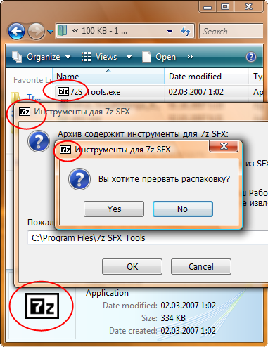
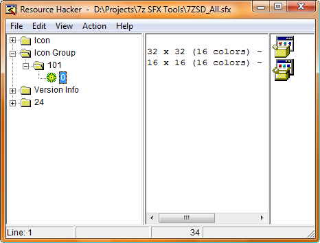
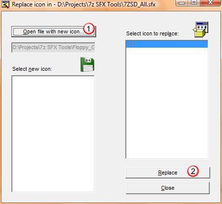
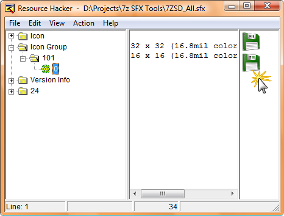

The purpose of replacing the icon is to have your own icon to be displayed in 7z SFX dialog windows as well as in the windows shell. Below is an example of 7z SFX Tools file with modified icon.

In this short guide we use freeware utility Resource Hacker (541 kb).
Download, unzip and launch the program. Drag and drop the module into the program window or use CTRL+O key combination to select the module. Expand Icon Group node, then 101 node and click 0, as shown below.

You see the icons that come with the module. Now we'll replace them with custom icons. Click Action menu and select Replace Icon... option. A window will appear as shown below.

Click Open file with new icon... button, select the icon you'd like to be displayed in 7z SFX dialogs and click Replace button.
Hit CTRL+S to save the module. By defult Reshacker keeps the original name for the new file, but renames the sorce file extention to .original.
You are done! All SFX archives created with the new module will have your custom icon.